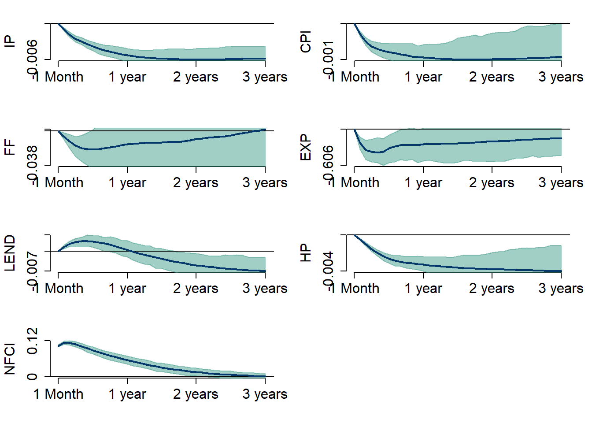
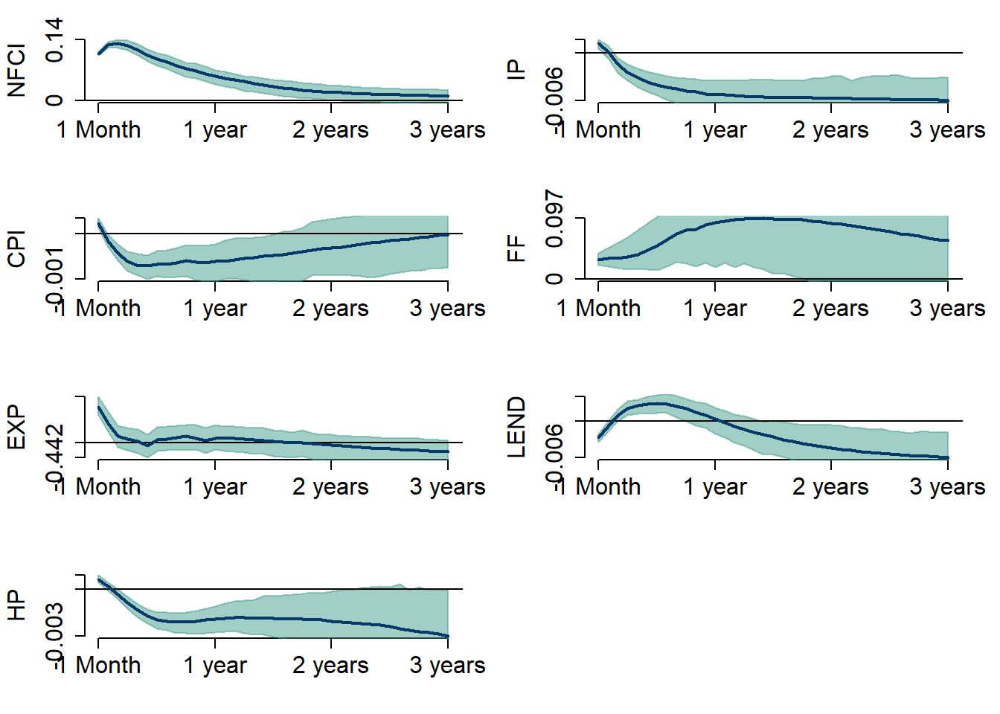

Macroeconometrics: An Investigation of the Effects of Financial Conditions on the US Real Economy
Disclaimer: This page is an ongoing research project conducted as a part of Macroeconometrics (ECOM9007) at The University of Melbourne, Australia.
Research question & Motivation
As the financial crisis emerged in 2008, the world economy realized just how much financial conditions affected the real economy. This research project intends to quantify the effects of a tightening of the financial conditions on the real economy.
The objective question to be answered can thus be summarized as follows; Does a tightening of the financial conditions have the anticipated significant effect on the real economy in terms of sign and magnitude?
What motivates this?
It is, or rather has been a standard part of macroeconomic modelling to exclude the financial sector from applied theoretical modelling. This has been a popular choice of researchers, who have argued that there is no or at least a negligible effect of financial variables on real variables. Nevertheless, financial crises are often followed by significant drops in consumption and production, as evident from the figure of the respective series in the forthcoming section. This might be a result of lower consumer sentiment, which possibly through a wealth channel, affects the overall demand for goods as well as savings. Thus, getting a thorough understanding of the effect of the financial conditions on the real economy is of importance for policy makers, who should take these insights into account when tightening the financial conditions through tighter monetary and/or macroprudential stances, as they might result in some undesired outcomes.
Furthermore, the research question is highly applicable in today’s economic climate. As central banks have started raising rates world wide, the financial condition index enables us to get a complete view of the effects that this might have by looking at financial markets, credit and liquidity while including the shadow banking system. The analysis is somewhat inspired by Jensen and Pedersen (2019), who finds that easing financial conditions had a positive impact on the Danish economy using quarterly data.
Data and its properties
As mentioned in the prior section the results of the structural analysis should be of immediate use for economic policy makers, and thus a high frequency is of importance. The model will therefore be estimated using monthly data for the economy of the United States.
The economic variables used for the empirical analysis are given by:
The economic activity, and thus a measure of the real economy, is modeled by industrial production which is an approximate variable for the movements in Gross Domestic Product (GDP). Industrial production is often used as a measure for real economic activity, and is in particular considered sufficient for economies with a large manufacturing sector. This implies that later on, the response of the variable can be interpreted as the effect of changes in NFCI to the real activity.
Additionally, the consumer price index (CPI) has been introduced to the model as well. The price level is included as financial conditions might affect the price level. Furthermore, given the mandates of the Federal Reserve (Fed), which includes keeping inflation steady while maintaining a high rate of employment, it is of importance getting an understanding of the relation between these variables.
In order to directly link the movements in the financial condition index and the real economy, total lending from commercial banks is applied. This is due to the fact that as financial conditions are possibly tightened through monetary or financial regulatory authorities, it might become harder to obtain a loan for households as well as firms, which might impact the economic activity, as evident from the financial crisis in 2008.
Additionally, as it is common to have a large amount of your wealth in real estate, S&P U.S. National Home Price Index has been included. The behavior of the real estate prices might especially have an impact in consumer sentiment possibly through the aforementioned wealth channel, which could then affect the real economy through lower demand for goods or a higher demand for savings. The model therefore includes consumer sentiment provided by University of Michigan. The variables of consumer sentiment will be denoted consumer expectations throughout the analysis. In order to take into account the monetary policy response, the federeal funds rate has been included.
Lastly, as we are interested in identifying a shock to financial conditions, the National Financial Condition Index (NFCI) is included. The index is constructed by the Federal Reserve, Chicago and is a measure of the conditions of finance, taking financial markets, credit and liquidity and the shadow banking system into account.
The time series are retrieved using Fred, the Economic database provided by the Federal Reserve Bank og St.Louis. The time period considered is from 01.01.1987 - 01.01.2023. The data is obtained using package fredr().
Preliminary data analysis
The six time series are presented in the figure below. All variables, except the two indexes, are transformed using the logarithm.
The industrial production, consumer price index, the house price index and overall lending seems to follow an upward trend. Nevertheless, significant events such as the great financial crisis of 2008 and the outbreak of Covid-19 have had significant impact on the short term movements in the respective series. Looking closer at the two indices, they seem to be somewhat negatively correlated, indicating that the aforementioned hypothesis of NFCI affecting consumer sentiment might be somewhat visually present.
In order to get a deeper understanding of the order of integration of the time series, the Autocorrelation function has been plotted in the graph below. The plot indicates, that the series are highly autocorrelated, thus indicating a univariate parameter value close to unity implying a high degree of memory.
In order to examine the order of integration, an Augmented Dicky Fuller test is conducted using function adf(). The test statistically tests for the existence of a unit root in the time series univariatly. The lag length used for the test is chosen to be 12. This is primarily a result of the data being monthly. The results can be found in the table below.
| Test statistic | P-value | Lags | |
|---|---|---|---|
| IP | -1.632 | 0.733 | 12 |
| CPI | -2.788 | 0.245 | 12 |
| FF | -3.141 | 0.098 | 12 |
| EXP | -2.139 | 0.519 | 12 |
| LEND | -3.296 | 0.072 | 12 |
| HP | -3.042 | 0.137 | 12 |
| NFCI | -3.240 | 0.081 | 12 |
As evident from the table we are not able to reject the null hypothesis of the presence of a unit root in any of the time series at a 5 pct. level of significance, and thus not able to reject the hypothesis of the variables being integrated of order 1. Now, taking the first-difference of the series and checking for the possibility of the series being integrated of order 2 we see, that it is rejected on a 5 pct. level of significance.
| Test statistic | P-value | Lags | |
|---|---|---|---|
| ΔIP | -5.274 | 0.010 | 12 |
| ΔCPI | -4.502 | 0.010 | 12 |
| ΔFF | -4.075 | 0.010 | 12 |
| ΔEXP | -6.541 | 0.010 | 12 |
| ΔLEND | -4.075 | 0.010 | 12 |
| ΔHP | -3.855 | 0.016 | 12 |
| ΔNFCI | -6.212 | 0.010 | 12 |
The order of integration is of particular interest when doing structural analysis, given that the shocks to stationary processes can be considered temporary, while shocks to I(1)-processes can be considered permanent given that random walk processes has a high degree of memory from past shocks. Thus, as the variables are I(1)-processes, all shocks can be considered permanent.
Econometric model and hypothesis
In order to determine the effect of a tightening of the financial conditions to the real economy one could apply a structural vector autoregressive model (SVAR), which enables an identification of that exact shock. A general version of the SVAR with q-lags is presented below: \[\begin{gather} B_0y_t=c_0+B_1y_{t-1}+B_2y_{t-2}+...+B_qy_{t-q}+\varepsilon_t, \end{gather}\] where \(y_t\) is a \(K \times 1\) matrix containing the variables outlined in section “Data and its properties”, \(B_i\) is a \(K \times K\) and \(c\) and \(\varepsilon_t\) are \(K \times 1\) matrices where \(K= \text{number of variables}\). The \(B_0\) is known as the structural matrix, containing contemporaneous relationships. \(\varepsilon_t\) conditionally on \(Y_{t-1}\) contains the orthogonal shocks with \(\varepsilon_t \sim iid(0_K,I_K)\).
For convenience researchers often consider the reduced form of the structural model. Pre-multiplying the model with \(B_0^{-1}\), rotating the model from the structural form to the reduced form. The model can be written as:
\[\begin{gather} \label{svar}
y_t=\mu+A_1y_{t-1}+A_2y_{t-2}+...+A_qy_{t-q}+u_t,
\end{gather}\] where \(A_j=B^{-1}_0B_j\), \(\mu=B_0^{-1}c_0\) and \(u_t=B^{-1}_0\varepsilon_t\) and where \(u_t|Y_{t-1}\sim iid(0_K,\Sigma)\), where \(\Sigma=B^{-1}_0B^{-1'}_0\).
The structure of \(B_0^{-1}\) can be imposed in numerous ways, although in order for the model to be identified using exclusion it must be the case, that we impose \(K(K-1)/2\) restrictions. In this research paper a cholesky decompostion will be applied. This implies a recursive identification which imposes the \(B_0^{-1}\) to be lower triangular. In general the ordering of the variables in \(y_t\) must be justified using economic theory. Nevertheless, this research paper follows the ordering introduced in Jensen and Pedersen (2019), and will be further elaborated in the section Empirical results.
How to use the structural model and proposed output
Having estimated the structural model, one could correctly examine the effects to the real economy of a shock to the financial conditions. Using a shock of one standard deviation, the structural impulse response functions (IRF) can be computed. The impulse responses indicate how the real economy responds to a tightening of the financial conditions. Having correctly imposed the recursive scheme on the model introduced in the prior section would enable us to see if there is a significant response on the real variables and additionally if the causality assumption of the consumer expectations, and its effect onto economic variables seem justified statistically.
Relating the signs of the impulse responses to the aforementioned hypothesis, one would theoretically expect that tighter financial conditions affected the consumer expectations negatively, which would have negative spill-overs to demand and thus production.
In order to get a better understanding of how much financial conditions affect the variables of interest one could compute a forecast error variance decomposition, and given that there at some point in the observed period might have been some kind of paradigm shift, using a historical decomposition can be used to see if the explanatory power of the financial conditions onto economic variables have changed over time. However, this will not be applied in this paper.
Estimation procedure and model extensions
In order to estimate the model the model outlined in the previous section I follow the algorithm proposed by Waggoner and Zha (2003).
Basic Model
we start by rewriting the structural model proposed proposed in the former section. Using that \(B_+ = \begin{bmatrix} c_0 & B_1 & \dots & B_q \end{bmatrix}\) and \(x_t = \begin{pmatrix} 1 & y'_{t-1} & \dots & y'_{t-q} \end{pmatrix}'\) we have that the model can be written as follows: \[\begin{gather} B_0y_t= B_+x_t + u_t, \text{ where } u_t \sim N(0,1) \end{gather}\]
\(B_0\) is the structural matrix containing the exclusionary restrictions. By using that \(B_{0[n\cdot]}=b_n\;V_n\) , where \(b_n\) is a vector of unrestricted elements and \(V_n\) is a matrix consisting of only ones and zeroes, which ensures that the restrictions are imposed on the right elements. The dimension of \(b_n\) and \(V_n\) is \(1\times r_n\) and \(r_n\times N\) respectively. This implies that the restrictions will be implemented on each row of the structural matrix such that \(B_0=\begin{bmatrix} b_1V_1 & \dots & b_NV_N \end{bmatrix}'\). Using the arguments the structural model can be written as: \[\begin{align} b_nV_nY &= B_nX+ U_n\\ U_n &\sim \mathcal{N}(0_T,I_T) \end{align}\] The dimensions of the matrices are given by; \(Y\) is a \(N\times T\) matrix, \(X\) is a \(K\times T\), \(U_n\) is a \(1\times T\) matrix and \(B_n=B_{+[n\cdot]}\) is of dimension \(1\times K\).
In order to derive the posterior distribution, the likelihood function of \(B_0\) and \(B_+\) given data as a \(\mathcal{NGN}\) distribution is introduced and given by:
\[\begin{align} L(B_+,B_0 | Y, X) \propto |\det(B_0)|^T \exp \left\{-\frac{1}{2} \sum_{n=1}^N (b_nV_nY-B_nX)(b_nV_nY-B_nX)' \right\} \end{align}\]Now moving on the to the natural-conjugate prior, we know from Waggoner and Zha (2003), that this can be represented by a normal-generalized-normal-distribution: \(p(B_+,B_0)\sim \mathcal{NGN}(\underline{B}, \underline{\Omega}, \underline{S}, \underline{\nu})\), where:
\[\begin{align} p(B_+,B_0)&=\left(\prod_{n=1}^N p(B_n|b_n)\right)p(b_1,\dots,b_n)\\ p(B_n|b_n)&\sim \mathcal{N}_K (b_nV_n\underline{B},\underline{\Omega})\\ p(b_1,\dots,b_n) &\propto |\det (B_0)|^{\underline{\nu}-N} \exp \left\{-\frac{1}{2}\sum_{n=1}^Nb_nV_n\underline{S}^{-1}V_n'b_n'\right\} \end{align}\]Thus using the likelihood function and the naturcal-conjugate prior we can state the kernel of the natural-conjugate prior distribution given by:
\[\begin{align} |\det(B_0)|^{\underline{\nu}-N} \exp \left\{-\frac{1}{2} \sum_{n=1}^N b_nV_n\underline{S}^{-1}V_n'B_n'\right\} \times \exp \left\{-\frac{1}{2} \sum_{n=1}^N (B_n-b_nV_n\underline{B})\underline{\Omega}^{-1}(B_n-b_nV_n\underline{B})'\right\} \end{align}\]The prior parameters to be exploited is given by:
\[\begin{align} \underline{B} &= \left[0_{N\times 1}\;I_N\;0_{N\times(p-1)N}\right]\\ \underline{\Omega} &= \text{diag} \left(\left[\kappa_2\;\kappa_1(\textbf{p}^{-2}\otimes I_N')\right)\right]\\ \underline{S} &= \kappa_0I_N\\ \underline{\nu} &= N \end{align}\]This enables us to derive the posterior distribution using the kernel outlined:
\[ \begin{align} p(B_+,B_0|Y,X) &\propto L(B_+,B_0|Y,X)p(B_+,B_0)\\ &\propto |\det(B_0)|^T \exp \left\{-\frac{1}{2} \sum_{n=1}^N (b_nV_nY-B_nX)(b_nV_nY-B_nX)' \right\}\\ &\times |\det(B_0)|^{\underline{\nu}-N} \exp \left\{-\frac{1}{2} \sum_{n=1}^N b_nV_n\underline{S}^{-1}V_n'B_n'\right\} \\ &\times \exp \left\{-\frac{1}{2} \sum_{n=1}^N (B_n-b_nV_n\underline{B})\underline{\Omega}^{-1}(B_n-b_nV_n\underline{B})'\right\} \end{align} \]
Completing the squares gives us the following expression
\[\begin{align} p(B_+,B_0|Y,X) &\propto |\det(B_0)|^{T+\underline{\nu}-N} \exp \left\{-\frac{1}{2} \sum_{n=1}^N (B_n-b_nV_n\bar{B})\bar{\Omega}^{-1}(B_n-b_nV_n\bar{B})'+b_nV_n\bar{S}^{-1}V_n'b_n'\right\} \end{align}\]Where the posterior distribution is then given by:
\[\begin{align} p(B_+,B_0|Y,X) &\sim \mathcal{NGN}(\bar{B},\bar{\Omega},\bar{S},\bar{\nu})\\ \bar{\Omega}&=\left[XX'+\underline{\Omega}^{-1}\right]^{-1}\\ \bar{B}&=\left[YX'+\underline{B\Omega}^{-1}\right]\bar{\Omega}\\ \bar{S}&=\left[YY'+\underline{S}^{-1}+\underline{B\Omega}^{-1}\underline{B}'-\bar{B}\bar{\Omega}^{-1}\bar{B}'\right]^{-1}\\ \bar{\nu}&= T+\underline{\nu} \end{align}\]Having formally stated the kernel of the basic model an outline of the Gibbs sampler can be provided.
Gibbs sampler and normalization
Given the Natural-conjugate prior distribution as already outlined above the sampler for the contemporaneous relations ship matrix \(B_0\) is drawn row-by-row from the full conditional distributions given by: \[\begin{gather*} p(b_n | Y, X, b_1, \dots, b_{n-1}, b_{n+1}, \dots, b_N) \end{gather*}\] Starting from this, the posterior sample \(\{b_1^{(s)},\dots, b_N^{(s)}\}^{S}_{s=1}\) can be computed.
The gibbs sampler for \(b_n^{(s)} \sim p(b_n | Y, X, b_1, \dots, b_{n-1}, b_{n+1}, \dots, b_N)\) is computed by following the algorithm proposed by Waggoner and Zha (2003):
- \(U_n = \text{chol}\Big(\bar{\nu}\Big(V_n\bar{S}^{-1}V_n'\Big)^{-1}\Big)\) where \(U_n\) is a \(r_n\times r_n\) matrix, with \(r_n\) being the \(n^{th}\) row.
\(w = [B_{0[-n.]}^{(s)}]\) where \(w\) is a \(1 \times N\) matrix
\(w_1 = wV_n'U_n'\cdot \Big( wV_n'U_n'V_nU_nw'\Big)^{\frac{1}{2}}\) where \(w_1\) is a \(1 \times r_n\) vector
\(W_n=\begin{pmatrix} w_1' & w_{1\perp}' \end{pmatrix}\) where \(W_n\) is a matrix of dimensions \(r_n \times r_n\)
We now construct the matrix \(\underset{1 \times r_n}{\alpha_n}\). This is done by drawing the first element of the matrix starting with:
\(u \sim N(0_{\nu+1},{\bar{\nu}^{-1}I_{\nu+1}})\)
Additionally setting \(\alpha_{n[\cdot 1]} = \begin{cases}\sqrt{u'u} \text{ with probability 0.5}\\-\sqrt{u'u} \text{ with probability 0.5}\end{cases}\)
The remaining \(r_n-1\) elements of \(\alpha_n\) can be drawn from \(N(0_{r_n-1},\bar{\nu}^{-1}I_{r_n-1})\), after which the draw of the full conditional distribution of \(b_n\) can be computed by \(b_n^{(s)}\alpha_nW_nU_n\).
Having computed the posterior sample, we must now normalize the sample as this ensures that we have found a unique maximum. The normalization is done by considering a normalisation of each draw from the posterior distribution of \(B_0^{(s)}\). Introducing a set of diagonal normalizing matrices \(\underset{N\times N}{Q_i}, i\in 1, \dots, 2^N\), with diagonal elements set to either 1 or -1, the distance between \(Q_iB_0^{(s)}\) and \(\hat{B_0}\), where the latter term is the estimated matrix of the contemporaneous effects can be derived. The distance is given by: \[\begin{equation*} d \Big[Q_i B_{0}^{(s)}-\hat{B_{0}}^{-1'} | (\hat{B_0}' \hat{B_{0}})^{-1}\Big] \end{equation*}\] Having found the \(i\) minimizing the distance, \(Q_{i*}B_0^{(s)}\), we can apply direct sampling determining \(B_+\) from its multivariate normal distribution, drawn for each \(b_n^{(s)}\).
Algorithms and functions
The functions below are provided by Tomasz Wozniak and are necessary to use the Gibbs sampler to replicate the algorithm provided by Waggoner and Zha (2003):
The first function introduced computes an orthogonal complement matrix to X which is used in the following rgn-function.
orthogonal.complement.matrix.TW = function(x){
N = dim(x)
tmp = qr.Q(qr(x, tol = 1e-10),complete=TRUE)
out = as.matrix(tmp[,(N[2]+1):N[1]])
return(out)
}The function rgn() simulates draws for the unrestricted elements of the contemporaneous relationships matrix of the structural model from a generalized normal distribution
rgn = function(n,S.inv,nu,V,B0.initial){
# n - a positive integer, the number of draws to be sampled
# S - an NxN positive definite matrix, a parameter of the generalized-normal distribution
# nu - a positive scalar, degrees of freedom parameter
# V - an N-element list, with fixed matrices
# B0.initial - an NxN matrix, of initial values of the parameters
N = nrow(B0.initial)
no.draws = n
B0 = array(NA, c(N,N,no.draws))
B0.aux = B0.initial
for (i in 1:no.draws){
for (n in 1:N){
rn = nrow(V[[n]])
SS_tmp = nu*solve(V[[n]]%*%S.inv%*%t(V[[n]]))
SS_tmp = 0.5 * (SS_tmp + t(SS_tmp))
Un = chol(SS_tmp)
w = t(orthogonal.complement.matrix.TW(t(B0.aux[-n,])))
w1 = w %*% t(V[[n]]) %*% t(Un) / sqrt(as.numeric(w %*% t(V[[n]]) %*% t(Un) %*% Un %*% V[[n]] %*% t(w)))
if (rn>1){
Wn = cbind(t(w1),orthogonal.complement.matrix.TW(t(w1)))
} else {
Wn = w1
}
alpha = rep(NA,rn)
u = rmvnorm(1,rep(0,nu+1),(1/nu)*diag(nu+1))
alpha[1] = sqrt(as.numeric(u%*%t(u)))
if (runif(1)<0.5){
alpha[1] = -alpha[1]
}
if (rn>1){
alpha[2:rn] = rmvnorm(1,rep(0,nrow(V[[n]])-1),(1/nu)*diag(rn-1))
}
bn = alpha %*% Wn %*% Un
B0.aux[n,] = bn %*% V[[n]]
}
B0[,,i] = B0.aux
}
return(B0)
}The third function used for the algorithm normalizes the matrix of the contemporaneous effects.
normalization.wz2003 = function(B0,B0.hat.inv, Sigma.inv, diag.signs){
# B0 - an NxN matrix, to be normalized
# B0.hat - an NxN matrix, a normalized matrix
N = nrow(B0)
K = 2^N
distance = rep(NA,K)
for (k in 1:K){
B0.tmp.inv = solve(diag(diag.signs[k,]) %*% B0)
distance[k] = sum(
unlist(
lapply(1:N,
function(n){
t(B0.tmp.inv - B0.hat.inv)[n,] %*%Sigma.inv %*% t(B0.tmp.inv - B0.hat.inv)[n,]
}
)))
}
B0.out = diag(diag.signs[which.min(distance),]) %*% B0
return(B0.out)
}The following function normalizes the output from the rgn function, ensuring that we are in a unique equilibrium, as discussed above.
normalize.Gibbs.output.parallel = function(B0.posterior,B0.hat){
# B0.posterior - a list, output from function rgn
# B0.hat - an NxN matrix, a normalized matrix
N = nrow(B0.hat)
K = 2^N
B0.hat.inv = solve(B0.hat)
Sigma.inv = t(B0.hat)%*%B0.hat
diag.signs = matrix(NA,2^N,N)
for (n in 1:N){
diag.signs[,n] = kronecker(c(-1,1),rep(1,2^(n-1)))
}
B0.posterior.n = mclapply(1:dim(B0.posterior)[3],function(i){
normalization.wz2003(B0=B0.posterior[,,i],B0.hat.inv, Sigma.inv, diag.signs)
},mc.cores=1
)
B0.posterior.n = simplify2array(B0.posterior.n)
return(B0.posterior.n)
}Lastly we need a function simulating the draws of the multivariate normal distribution of the autoregressive slope matrix.
rnorm.ngn = function(B0.posterior,B,Omega){
# B0.posterior - a list, output from function rgn
# B - an NxK matrix, a parameter determining the mean of the multivariate conditionally normal distribution given B0
# Omega - a KxK positive definite matrix, a covariance matrix of the multivariate normal distribution
N = nrow(B)
K = ncol(B)
no.draws = dim(B0.posterior)[3]
L = t(chol(Omega))
Bp.posterior = lapply(1:no.draws,function(i){
Bp = matrix(NA, N, K)
for (n in 1:N){
Bp[n,] = as.vector(t(B0.posterior[n,,i] %*% B) + L%*%rnorm(K))
}
return(Bp)
})
Bp.posterior = simplify2array(Bp.posterior)
return(Bp.posterior)
}Now having introduced the functions applied throughout the Gibbs sampler, the artificial data can be generated and the:
T = 500
N = 3
p = 1
K = 1 + N * p
y.sim = apply(matrix(rnorm(T * N), ncol = N), 2, cumsum)
# create Y and X
############################################################
Y.sim = y.sim[(p+1):nrow(y.sim),]
X.sim = matrix(1,nrow(Y.sim),1)
for (i in 1:p){
X.sim = cbind(X.sim,y.sim[((p+1):nrow(y.sim))-i,])
}
Y.sim = t(Y.sim)
X.sim = t(X.sim)Before running the algorithm we need the set the priors according to the baseline model, aforementioned, and impose the required exclusionary restrictions, which in this model will be done by following a recursive scheme.
# set the priors
kappa1 = .1 # Autoregressive slope shrinkage
kappa2 = 10 # Constant term shrinkage
kappa0 = 10 # Contemporaneous effects shrinkage
priors = list(
B = cbind(rep(0,N), diag(N), matrix(0, N, (p-1)*N)),
Omega = diag(c(kappa2,kappa1*((1:p)^(-2))%x%rep(1,N))),
# Omega = diag(c(kappa2,kappa1*rep(1,N*p))),
S = kappa0*diag(N),
nu = N
)
#Exclusions (can be changed to different exclusions then cholesky)
FF.V = vector("list",N)
for (n in 1:N){
FF.V[[n]] = cbind(diag(n),matrix(0,n,N-n))
}
# The B0.initial is used as an initial matrix used in the Gibbs sampler
B0.initial = matrix(0,N,N)
for (n in 1:N){
unrestricted = apply(FF.V[[n]],2,sum)==1
B0.initial[n,unrestricted] = rnorm(sum(unrestricted))
}The function for Gibbs sampler of the baseline model can be found below:
## Gibbs sampler for posterior simulations ##
Gibbs.sampler.base <- function(p,Y,X,priors,S1,S2, FF.V, B0.initial){
N = nrow(Y)
p = p # calculate from X and Y (K and N)
K = 1+N*p
S1 = S1
S2 = S2
kappa0 = 10
kappa1 = 10
kappa2 = 0.1
B0.posterior <- array(NA,c(N,N,(S1+S2)))
Bp.posterior <- array(NA,c(N,(1+N*p),(S1+S2)))
for (s in 1:(S1+S2)){
# Computing posterior parameters
Omega.inv = solve(priors$Omega)
Omega.post.inv = X%*%t(X) + Omega.inv
Omega.post = solve(Omega.post.inv)
B.post = (Y%*%t(X) + priors$B%*%Omega.inv) %*% Omega.post
S.post = Y%*%t(Y) + solve(priors$S) + priors$B%*%Omega.inv%*%t(priors$B) - B.post%*%Omega.post.inv%*%t(B.post)
nu.post = ncol(Y) + priors$nu
# Use B0.initial for first iteration, otherwise the latest draw from B0.posterior
if (s==1) {
B0.s = B0.initial
} else {
B0.s = B0.posterior[,,s-1]
}
# sampling one draw B0 from the posterior distribution using Gibbs
# rgn.function samples from a random conditional generalized normal distribution
B0.tmp = rgn(n=1, S.inv=S.post, nu=nu.post, V=FF.V, B0.initial=B0.s)
B0.posterior[,,s] = B0.tmp[,,1]
# sample one draw B+ from the normal conditional posterior
Bp.tmp = rnorm.ngn(B0.tmp, B=B.post,Omega=Omega.post)
Bp.posterior[,,s] = Bp.tmp[,,1]
}
# END OF GIBBS
#Discard first S1 draws
B0.posterior <- B0.posterior[,,(S1+1):(S1+S2)]
Bp.posterior <- Bp.posterior[,,(S1+1):(S1+S2)]
#normalisation of B0.posterior and Bp.posterior
B0.hat = diag(sign(diag(B0.tmp[,,1]))) %*% B0.tmp[,,1]
B0.posterior.N <- array(NA,c(N,N,S2))
Bp.posterior.N <- array(NA,c(N,(1+N*p),S2))
B0.posteror.N.tmp = normalize.Gibbs.output.parallel(B0.posterior,B0.hat=B0.hat)
for (s in 1:S2){
B0.posterior.N[,,s] = B0.posteror.N.tmp[,,s]
Bp.posterior.N[,,s] = B0.posterior.N[,,s]%*%solve(B0.posterior[,,s])%*%Bp.posterior[,,s]
}
return(list(B0.posterior.N = B0.posterior.N,
Bp.posterior.N = Bp.posterior.N))
}[1] "B_0" [,1] [,2] [,3]
[1,] 1.074 0.000 0.000
[2,] 0.008 1.057 0.000
[3,] -0.009 0.059 0.962[1] "B_+" [,1] [,2] [,3] [,4]
[1,] 0.133 1.026 -0.015 -0.008
[2,] 0.088 -0.012 1.039 -0.007
[3,] -0.282 -0.002 0.053 0.956The results indicates that the exclusion restrictions, which in this case is modelled by a recursive structure is implemented on the structural matrix,\(B_0\), as illustrated in the former section. We see that the posterior mean of the constant term, which is found in the first column of matrix \(B_+\) is close to zero, as well as the remaining part can be identified as an identity matrix.
Extended model
In order to improve the estimation of the parameters, it is standard in bayesian econometrics to estimate the hyper-parameters contrary to setting them to fixed values as in the case of the basic model. Estimating the hyper-parameters is often done to improve the model, and is demonstrated to have a lot of power in terms of the overall likelihood of the model, as demonstrated in Chan (2022).
The extension proposed in this research paper is therefore to estimate \(\kappa_0\) and \(\kappa_+\), where \(\kappa_+\) contains the shrinkage of the constant term as well as the shrinkage of the slope of the autoregressive parameters, and \(\kappa_0\) is the shrinkage of the structural matrix.
In the extended model, the natural-conjugate prior is given by, where we note, that the hyper-parameters follows an Inverse-gamma-2 distribution:
\[\begin{align} p(B_+,B_0|Y,X) &\propto L(B_+,B_0|Y,X)p(B_+,B_0|\kappa_0,\kappa_+)p(\kappa_0)p(\kappa_+)\\ \end{align}\] \[\begin{align} p(\kappa_0|\underline{s}_{\kappa_0},\underline{\nu}_{\kappa_0}) &\sim \mathcal{IG}2(\underline{s}_{\kappa_0},\underline{\nu}_{\kappa_0})\\ p(\kappa_+|\underline{s}_{\kappa_+},\underline{\nu}_{\kappa_+}) &\sim \mathcal{IG}2(\underline{s}_{\kappa_+},\underline{\nu}_{\kappa_+}) \end{align}\]Now finding an expression for the Full-conditional posterior of \(\kappa_0\), we can write this as:
\[\begin{align} p(\kappa_0|Y,X,B_0,B_+,\kappa_+) &\propto p(B_0|\kappa_0)p(\kappa_0)\\ &\propto \prod_{n=1}^N\kappa_0^{\frac{r_n}{2}}\exp \left\{ -\frac{1}{2}\sum_{n=1}^N b_nV_n(\kappa_0 I_{r_n})^{-1}V_n'b_n'\right\}\kappa_0^{-\frac{\underline{\nu}_{\kappa_0}+2}{2}}\exp \left\{ -\frac{1}{2} \frac{\underline{s}_{\kappa_0}}{\kappa_0}\right\}\\ &\propto \prod_{n=1}^N\kappa_0^{\frac{r_n}{2}} \exp \left\{ -\frac{1}{2}\frac{1}{\kappa_0}\sum_{n=1}^N b_nV_n I_{r_n}V_n'b_n'\right\}\kappa_0^{-\frac{\underline{\nu}_{\kappa_0}+2}{2}}\exp \left\{ -\frac{1}{2} \frac{\underline{s}_{\kappa_0}}{\kappa_0}\right\} \end{align}\]where we have used that that \(\underline{S}=\kappa_0I_N\) and that \(b_n|\kappa_0 \sim \mathcal{N}(0,\kappa_0(V_nV_n')^{-1})=\mathcal{N}_{r_n}(0_{r_n},\kappa_0I_{r_n})\). Thus by collecting the terms accordingly, we are able to determine the full conditional posterior, given by the shape parameter, \(\bar{S_{\kappa_0}}\), and the degrees of freedom, \(\bar{\nu}_{\kappa_0}\):
\[\begin{align} p(\kappa_0|Y,X,B_0,B_+,\kappa_+) &\propto \kappa_0^{-\frac{\bar{\nu}_{\kappa_0}+2}{2}} \exp \left\{ -\frac{1}{2}\frac{\bar{s}_{\kappa_0}}{\kappa_0} \right\}\\ \bar{s}_{\kappa_0} &= \underline{s}_{\kappa_0}+\sum_{n=1}^N b_nV_nI_{r_n}V_n'b_n'\\ \bar{\nu}_{\kappa_0} &= \underline{\nu}_{\kappa_0}+\sum_{n=1}^N r_n \end{align}\]Doing the same excercise for \(\kappa_+\) gives us and expression for the full-conditional posterior:
\[\begin{align} p(\kappa_+|Y,X,B_0,B_+,\kappa_0) &\propto p(B_+|B_0,\kappa_+)p(\kappa_+)\\ &\propto \kappa_+^{\frac{K}{2}}\exp \left\{-\frac{1}{2}\frac{1}{\kappa_+} \sum_{n=1}^N (B_n-b_nV_n\underline{B})\underline{\Omega}^{-1}(B_n-b_nV_n\underline{B})'\right\}\kappa_+^{-\frac{\underline{\nu}_{\kappa_+}+2}{2}}\exp \left\{ -\frac{1}{2} \frac{\underline{s}_{\kappa_+}}{\kappa_+}\right\} \end{align}\]where we have used that \(B_n|b_n,\kappa_+ \sim \mathcal{N}_{N+1}(b_nV_n\underline{B},\kappa_+\Omega)\)
Following the aforementioned arguments, the posterior parameters can be expressed as:
\[\begin{align} p(\kappa_+|Y,X,B_0,B_+,\kappa_0) &\propto \kappa_+^{-\frac{\bar{\nu}_{\kappa_+}+2}{2}} \exp \left\{ -\frac{1}{2}\frac{\bar{s}_{\kappa_+}}{\kappa_+} \right\}\\ \bar{s}_{\kappa_+} &= \underline{s}_{\kappa_+}+\sum_{n=1}^N (B_n-b_nV_n\underline{B})\underline{\Omega}^{-1}(B_n-b_nV_n\underline{B})'\\ \bar{\nu}_{\kappa_+} &= \underline{\nu}_{\kappa_+}+NK \end{align}\]Turning to the implementation of the extension we can by following the derivations outlined above write the priors of the extended model as below
### Setting new priors
priors = list(
B = cbind(rep(0,N), diag(N), matrix(0, N, (p-1)*N)),
Omega = diag(c(10,((1:p)^(-2))%x%rep(1,N))),
S = diag(N),
nu = N,
S.kappa0 = 1,
nu.kappa0 = 1,
S.kappa1 = 1,
nu.kappa1 = 1
)The function for Gibbs sampler of the extended model can be found below:
# The B0.initial is used as an initial matrix used in the Gibbs sampler
B0.initial = matrix(0,N,N)
for (n in 1:N){
unrestricted = apply(FF.V[[n]],2,sum)==1
B0.initial[n,unrestricted] = rnorm(sum(unrestricted))
}
## Gibbs sampler for posterior simulations ##
Gibbs.sampler.extended <- function(p,Y,X,priors,S1,S2, FF.V, B0.initial){
N = nrow(Y)
p = p # calculate from X and Y (K and N)
K = 1+N*p
S1 = S1
S2 = S2
kappa0 <- rep(NA, S1 + S2)
kappa1 <- rep(NA, S1 + S2)
B0.posterior <- array(NA,c(N,N,(S1+S2)))
Bp.posterior <- array(NA,c(N,(1+N*p),(S1+S2)))
kappa0[1] <- 1
kappa1[1] <- 1
for (s in 1:(S1+S2)){
# Computing posterior parameters
Omega.inv = solve(priors$Omega)
Omega.post.inv = X%*%t(X) + (1/kappa1[s])*Omega.inv
Omega.post = solve(Omega.post.inv)
B.post = (Y%*%t(X) + priors$B%*%((1/kappa1[s])*Omega.inv)) %*% Omega.post
S.post = Y%*%t(Y) + (1/kappa0[s])*solve(priors$S) + priors$B%*%((1/kappa1[s])*Omega.inv)%*%t(priors$B) - B.post%*%Omega.post.inv%*%t(B.post)
nu.post = ncol(Y) + priors$nu
# Use B0.initial for first iteration, otherwise the latest draw from B0.posterior
if (s==1) {
B0.s = B0.initial
} else {
B0.s = B0.posterior[,,s-1]
}
# sampling one draw B0 from the posterior distribution using Gibbs
# rgn.function samples from a random conditional generalized normal distribution
B0.tmp = rgn(n=1, S.inv=S.post, nu=nu.post, V=FF.V, B0.initial=B0.s)
B0.posterior[,,s] = B0.tmp[,,1]
# sample one draw B+ from the normal conditional posterior
Bp.tmp = rnorm.ngn(B0.tmp, B=B.post,Omega=Omega.post)
Bp.posterior[,,s] = Bp.tmp[,,1]
#compute posterior for the shrinkage parameter S.kappa and nu
S.kappa0.post = priors$S.kappa0 + sum(B0.posterior[,,s]^2)
# S.kappa.post = sum(priors$S.kappa + (B0.posterior[i,,s]-priors$B[i,])%*%Omega.inv%*%t(B0.posterior[i,,s]-priors$B[i,]))
# nu.kappa0.post = priors$nu.kappa0 + i #change outside of loop count number rows (otherwise make as a sum of i's)
nu.kappa0.post = priors$nu.kappa0 + sum(unlist(lapply(FF.V, nrow)))
S.kappa1.post = priors$S.kappa1
for (i in 1:N){
S.kappa1.post = S.kappa1.post + (Bp.posterior[i,,s]- B0.posterior[i,,s]%*%priors$B)%*%Omega.inv%*%t(Bp.posterior[i,,s]-B0.posterior[i,,s]%*%priors$B)
}
# S.kappa.post = sum(priors$S.kappa + (B0.posterior[i,,s]-priors$B[i,])%*%Omega.inv%*%t(B0.posterior[i,,s]-priors$B[i,]))
nu.kappa1.post = priors$nu.kappa1 + N*(p*N+1)
#Draw kappa0 and kappa1 from IG2
if (s != S1+S2) {
kappa0[s+1] = S.kappa0.post / rchisq(1, df=nu.kappa0.post)
kappa1[s+1] = S.kappa1.post / rchisq(1, df=nu.kappa1.post)
}
}
#Discard first S1 draws
B0.posterior <- B0.posterior[,,(S1+1):(S1+S2)]
Bp.posterior <- Bp.posterior[,,(S1+1):(S1+S2)]
kappa0 <- kappa0[(S1+1):(S1+S2)]
kappa1 <- kappa1[(S1+1):(S1+S2)]
#normalisation of B0.posterior and Bp.posterior
B0.hat = diag(sign(diag(B0.tmp[,,1]))) %*% B0.tmp[,,1]
# t(chol((nu.post-N)*S.post))# normalisation using this B0.hat should work
B0.posterior.N <- array(NA,c(N,N,S2))
Bp.posterior.N <- array(NA,c(N,(1+N*p),S2))
B0.posteror.N.tmp = normalize.Gibbs.output.parallel(B0.posterior,B0.hat=B0.hat)
for (s in 1:S2){
B0.posterior.N[,,s] = B0.posteror.N.tmp[,,s]
Bp.posterior.N[,,s] = B0.posterior.N[,,s]%*%solve(B0.posterior[,,s])%*%Bp.posterior[,,s]
}
return(list(B0.posterior.N = B0.posterior.N,
Bp.posterior.N = Bp.posterior.N,
kappa0 = kappa0,
kappa1 = kappa1))
}[1] "B_0" [,1] [,2] [,3]
[1,] 1.073 0.000 0.000
[2,] 0.009 1.056 0.000
[3,] -0.013 0.062 0.959[1] "B_+" [,1] [,2] [,3] [,4]
[1,] 0.131 1.025 -0.016 -0.008
[2,] 0.084 -0.013 1.038 -0.008
[3,] -0.277 -0.005 0.055 0.953[1] "Kappa_0"[1] 0.8300141[1] "Kappa_+"[1] 0.09376882As for the basic model, the parameters are estimated according to the simulated data, with the exclusion restrictions imposed and an identity matrix in \(B_+\), as well as the mean of the constant term is zero. The estimation of the hyper parameters are in general in line with the literature, where the hyper parameter of the shrinkage of the structural matrix, \(\kappa_0\) is generally estimated to be larger, compared to \(\kappa_+\) which is relatively small. Additionally, in order to check the convergence of the model, the estimated parameters in the diagonal of the matrix \(B_+\) is plotted against the number of draws. We see that the convergence is complete, as the graph should can be considered white noise. The estimations are computed using 500 number of observations and 3000 draws, where 500 of the first observations are discarded. The low number of draws is due to the computational power required.

Empirical results
Identification
In order for us to do the impulse responses, we first have to implement the exclusionary restricitions according to the identification of the desired shock. Starting from the structural matrix presented in the sections above. The recursive scheme is implemented as presented below:
\[\begin{align} B_0 Y=\begin{bmatrix} b_{11} & 0&0&0&0&0&0 \\ b_{21} & b_{22} & 0&0&0&0&0 \\ b_{31} & b_{32} & b_{33} &0&0&0 &0 \\ b_{41} & b_{42} & b_{43} &b_{44}&0&0&0 \\ b_{51} & b_{52} & b_{53} &b_{54}&b_{55}&0&0 \\ b_{61} & b_{62} & b_{63} &b_{64}&b_{65}&b_{66}&0\\ b_{71} & b_{72} & b_{73} &b_{74}&b_{75}&b_{76}&b_{77}\\ \end{bmatrix}\begin{bmatrix} IP \\ CPI \\ FF \\ Exp \\ Lend \\ HP \\ NFCI \end{bmatrix} \end{align}\]The ordering follows the arguments of Jensen and Pedersen (2019), where financial variables, which can be considered fast moving are ordered before the variables representing the real economy. One should note that the Federal funds rate has been placed almost in the middle of the system. The placement is supposed to act as a standard Taylor rule, where we see, that the central bank adjusts its rates according to movements in prices and output, which are not allowed to affect these variables contemporaneously, according to an outside lag of monetary policy transmission of one month. We see from the structural matrix, that NFCI is placed last, which implies that the variable it self are allowed to respond to shocks from the other variables contemporaneously, however, a shock from financial conditions will only have an effect on the remaining variables in the subsequent month, this seems reasonable, as one might expect the other variables such as expectations, rates and house prices might need some time to adjust according to the new information.
Baseline model
The results from the baseline model can be found below where some chosen results are reported.
[1] "B_0 mean" [,1] [,2] [,3] [,4] [,5] [,6] [,7]
[1,] 55.174 0.000 0.000 0.000 0.000 0.000 0.000
[2,] 0.316 64.621 0.000 0.000 0.000 0.000 0.000
[3,] 6.200 -2.490 6.359 0.000 0.000 0.000 0.000
[4,] 2.867 2.313 -1.352 0.263 0.000 0.000 0.000
[5,] -8.559 1.201 0.357 0.034 52.020 0.000 0.000
[6,] 0.202 -0.685 -0.187 0.000 1.499 63.214 0.000
[7,] -1.448 1.675 0.950 0.058 -6.611 2.167 9.104[1] "B_0 standard deviations" [,1] [,2] [,3] [,4] [,5] [,6] [,7]
[1,] 1.871 0.000 0.000 0.000 0.000 0.000 0.000
[2,] 2.803 2.193 0.000 0.000 0.000 0.000 0.000
[3,] 2.681 3.081 0.231 0.000 0.000 0.000 0.000
[4,] 2.717 3.070 0.316 0.009 0.000 0.000 0.000
[5,] 3.086 3.151 0.323 0.013 1.966 0.000 0.000
[6,] 2.736 3.055 0.321 0.013 2.619 2.142 0.000
[7,] 2.679 3.144 0.326 0.013 2.665 3.085 0.309Looking at the convergence for \(B_+\), we see that the estimation is consistent.

Looking at the histograms we can get an idea of how the parameters is distributed:

Extended model
As for the baseline model i report the estimated matrices and the standard deviation of \(B_0\):
[1] "B_0 mean" [,1] [,2] [,3] [,4] [,5] [,6] [,7]
[1,] 104.119 0.000 0.000 0.000 0.000 0.000 0.00
[2,] 16.344 386.490 0.000 0.000 0.000 0.000 0.00
[3,] 18.680 -89.627 6.630 0.000 0.000 0.000 0.00
[4,] 13.374 89.991 -1.897 0.268 0.000 0.000 0.00
[5,] -61.605 76.155 0.726 0.062 58.891 0.000 0.00
[6,] 3.193 -89.508 -0.229 -0.009 13.831 252.848 0.00
[7,] -4.985 47.946 0.884 0.059 -19.554 24.257 9.68[1] "B_0 standard deviations" [,1] [,2] [,3] [,4] [,5] [,6] [,7]
[1,] 3.6108 0.0000 0.0000 0.0000 0.0000 0.0000 0.0000
[2,] 5.1773 15.1416 0.0000 0.0000 0.0000 0.0000 0.0000
[3,] 5.1607 20.1942 0.2629 0.0000 0.0000 0.0000 0.0000
[4,] 5.1738 20.7611 0.3396 0.0099 0.0000 0.0000 0.0000
[5,] 6.3656 20.6280 0.3484 0.0136 5.3656 0.0000 0.0000
[6,] 6.1054 21.4989 0.3604 0.0136 5.7036 8.8411 0.0000
[7,] 5.8778 21.3591 0.3488 0.0140 5.7220 12.2686 0.3366[1] "Kappa_0"[1] 9994.96[1] "Kappa_+"[1] 0.3279465Looking at the convergence for \(B_+\), we see that the estimation is consistent. As already mentioned for the artificial data \(\kappa_0\) is generally estimated to be large, which is also the case here. As aforementioned, this is in line with the literature.

As for the baseline model, looking at the histograms we can get an idea of how the parameters is distributed:

Impulse Response Functions
Starting from a general VAR we know that we can write it in its Vector Moving Average respresentation (VMA) assuming that the stationarity conditions is fulfilled. Furthermore, introducing the matrix \(J=\left[I_n\quad 0_{N\times N(p-1)}\right]\), and that we consider a structural model, the model can expressed as follows:
\[\begin{align} y_t &=Bu_t+J\textbf{A}J'Bu_{t-1}+J\textbf{A}^2J'Bu_{t-2}+...\\ &=\Theta_0u_t+\Theta_1u_{t-1}+\Theta_2u_{t-2}+...\\ \end{align}\]where \(\frac{\partial y_{t+i}}{\partial u_t}=\Theta_i\) is the structural IRFs. The IRFs are computed using the following function:
irf <- function(p,B0.posterior,Bp.posterior,h,shock){
#variable number for shock.
np = shock
h = h
p = p
N = dim(B0.posterior)[2]
S2 <- dim(B0.posterior)[3]
K <- 1+N*p
mcxs1 = "#05386B"
mcxs2 = "#379683"
mcxs3 = "#5CDB95"
mcxs4 = "#8EE4AF"
mcxs5 = "#EDF5E1"
purple = "#b02442"
mcxs1.rgb = col2rgb(mcxs1)
mcxs1.shade1= rgb(mcxs1.rgb[1],mcxs1.rgb[2],mcxs1.rgb[3], alpha=120, maxColorValue=255)
mcxs2.rgb = col2rgb(mcxs2)
mcxs2.shade1= rgb(mcxs2.rgb[1],mcxs2.rgb[2],mcxs2.rgb[3], alpha=120, maxColorValue=255)
# Impulse response functions
# Forecast Error Variance Decomposition
############################################################
B.posterior = array(NA,c(N,N,S2))
A.posterior = array(NA,c(N,K,S2))
for (s in 1:S2){
B = solve(B0.posterior[,,s])
B.posterior[,,s]= B
A.posterior[,,s]= B %*% Bp.posterior[,,s]
}
IRF.posterior = array(NA,c(N,N,h+1,S2))
IRF.inf.posterior = array(NA,c(N,N,S2))
FEVD.posterior = array(NA,c(N,N,h+1,S2))
J = cbind(diag(N),matrix(0,N,N*(p-1)))
for (s in 1:S2){
A.bold = rbind(A.posterior[,2:(1+N*p),s],cbind(diag(N*(p-1)),matrix(0,N*(p-1),N)))
IRF.inf.posterior[,,s] = J %*% solve(diag(N*p)-A.bold) %*% t(J) %*% B.posterior[,,s]
A.bold.power = A.bold
for (i in 1:(h+1)){
if (i==1){
IRF.posterior[,,i,s] = B.posterior[,,s]
} else {
IRF.posterior[,,i,s] = J %*% A.bold.power %*% t(J) %*% B.posterior[,,s]
A.bold.power = A.bold.power %*% A.bold
}
}
}
FEVD.posterior = 100*FEVD.posterior
# plot IRFs and FEVDs
############################################################
IRF.posterior.mps = IRF.posterior[,np,,]
IRFs.k1 = apply(IRF.posterior.mps,1:2,median)
IRFs.k1 = apply(IRF.posterior.mps,1:2,median)
IRFs.inf.k1 = apply(IRF.posterior.mps,1,mean)
rownames(IRFs.k1) = colnames(y)
IRFs.k1.hdi = apply(IRF.posterior.mps,1:2,hdi, credMass=0.68)
hh = 1:(h+1)
pl = par(mfrow=c(4,2), mar=c(4,4.5,2,2),cex.axis=1.5, cex.lab=1.5)
for (n in 1:N){
ylims = range(IRFs.k1[n,hh],IRFs.k1.hdi[,n,1:6],0)
plot(hh,IRFs.k1[n,hh], type="l", ylim=ylims, axes=FALSE, xlab="", ylab=rownames(IRFs.k1)[n])
if (n==5 | n==6){
axis(1,c(1,13,25,37),c("1 Month","1 year","2 years","3 years"))
} else {
axis(1,c(1,13,25,37),c("1 Month","1 year","2 years","3 years"))
}
axis(2,c(ylims[1],0,ylims[2]),round(c(ylims[1],0,ylims[2]),3))
polygon(c(hh,(h+1):1), c(IRFs.k1.hdi[1,n,hh],IRFs.k1.hdi[2,n,(h+1):1]), col=mcxs2.shade1,border=mcxs2.shade1)
abline(h=0)
lines(hh, IRFs.k1[n,hh],lwd=2,col=mcxs1)
}
}Basic model
The impulse responses for the baseline are presented with confidence bands of one standard deviation being equivalent to the 68 pct. level of significance. The plots can be found below.
Extended model
The impulse responses for extended model are as for the baseline model presented with confidence bands of one standard deviation being equivalent to the 68 pct. level of significance. The plots can be found below.

We see that following a positive shock to financial conditions, which is equivalent to a tightening of financial conditions, the real economic variables responds according to the hypothesis presented above. As Financial conditions tighten we see that industrial production as well as consumer prices decrease. This is what one would expect according to economic theory, as the tighter conditions of finance should make it harder for firms and consumers to acquire liquidity for investments and consumption smoothing: Another possible channel is that as financial conditions are tightened consumers expect that the economic situation will be worse compared to the current state and thus starts increasing their savings, implying a lower demand for goods, affecting the industrial production as well as the consumer prices negatively. Following the observed movements in the real economic variables the central bank responds by lowering the federal funds rate in order to stimulate the economy.
Looking at the financial variables we see that the house prices are decreasing, which is explained by the tougher financial conditions. However, rather surprisingly we see that the initial response of lending is positive, after which it decreases substantially. The initial response is not what you would expect, as the tighter conditions in the financial markets should impact the liquidity market negatively and thus decrease the total lending. Nevertheless, this might simply be explained by the fact that there is a lag from the tightening until an actual implementation. All the responses are significant.
From the plots of the basic and the extended model it is evident, that the overall picture is very similar, however, what we gain from estimating the hyper parameters is that the confidence bands are significantly narrowed, which implies that we have essentially reduced de uncertainty in the model, thus giving us more reliable responses.
Robustness
When applying a recursive structure, it is standard in the literature to provide a robustness check, testing whether the empirical results change as the structure is changes. Thus, in order to comply with this i consider a model where the shock of interest has been placed first, and thus \(Y=\begin{bmatrix}NFCI & IP & CPI & FF & Exp & Lend & HP \end{bmatrix}'\). This implies that there is contemporaenous effects from a shock in financial coditions onto the real economy. The IRFs can be found below.

From the plot it is evident that the long run response of CPI and industrial production is similar to the prior IRFs, however, we see an initial increase, which is in contrast to what economic theory would suggest. Looking at the response of the Federal reserve, we see that the interest rate is now increased. This is different from the prior IRFs where they indicated a reduction. Looking at the consumer expectations we see that they increase, which might be explained by the fact that agents are assuming that tightening stems from an indication of a bright future ahead. The response of house prices and lending are in line with the previous plots.
The different responses of the Federal Reserve might be explained by two possible channels. In the first ordering, the response would be considered a help to the economy, after seeing the economic downturn forced by the tighter financial conditions. In the robust setting, the response would indicate, that the interest rate on treasury bonds, which closely follows the federal funds rate included in the NFCI, has increased.
Summing up the empirical investigation
Summing up, the hypothesis, stating that financial conditions affects the real economy cannot be rejected, as we see that it indeed has a significant effect, and it is thus very important to policy makers to take this into account when doing financial regulation and/or monetary policy. Furthermore, changing the order of the variables does not have a significant effect on the empirical results regarding the real economic variables. Nevertheless, it does have a significant effect on the response of the Federal Reserve as well as the consumer expectations.
Extending the extended model with a t-distribution
One way to improve the model and potentially narrow the confidence bands is by allowing the model to follow a t-distribution.
Following the literature, we have that the unconditional distribution of \(u_{n.t}\sim \mathcal{N}(0,1)\) where \(u_{n.t}\) is the structural shock for the \(n^{th}\) row. If we instead consider the conditional distribution with the structural error term conditioned on \(\lambda_n \sim \mathcal{IG}2(\underline{s}_{\lambda},\underline{\nu}_{\lambda})\) we have that \(u_{n.t}|\lambda \sim \mathcal{N}(0,\lambda)\). Now, looking at the PDF of \(u_{n.t}\) we can now write this as:
\[\begin{align} p(u_{n.t}) &= \int p(u_{n.t}|\lambda_n)p(\lambda_n)d\lambda_n \\ & = \mathcal{t}(0,\underline{s},\underline{\nu}) \end{align}\]As our error terms now follows a t-distribution the likelihood function has to be rewritten in order to determine how this affects the posterior distributions. The Likelihood function thus becomes:
\[\begin{align} L(B_+,B_0 | Y, X) \propto |\det(B_0)|^T|\det(\lambda I_t)|^N \exp \left\{-\frac{1}{2} \sum_{n=1}^N (b_nV_nY-B_nX)(\lambda I_t)^{-1}(b_nV_nY-B_nX)' \right\} \end{align}\]And by following the same steps as presented above we can write the posterior distribution as follows:
\[\begin{align} p(B_+,B_0|Y,X) &\sim \mathcal{NGN}(\bar{B},\bar{\Omega},\bar{S},\bar{\nu})\\ \bar{\Omega}&=\left[X(\lambda I_t)^{-1}X'+\underline{\Omega}^{-1}\right]^{-1}\\ \bar{B}&=\left[Y(\lambda I_t)^{-1}X'+\underline{B\Omega}^{-1}\right]\bar{\Omega}\\ \bar{S}&=\left[Y(\lambda I_t)^{-1}Y'+\underline{S}^{-1}+\underline{B\Omega}^{-1}\underline{B}'-\bar{B}\bar{\Omega}^{-1}\bar{B}'\right]^{-1}\\ \bar{\nu}&= T+\underline{\nu} \end{align}\]Now determining the posterior distribution of \(\lambda\) we have that
\[\begin{align} p(B_+,B_0|Y,X) &\propto L(B_+,B_0|Y,X)p(B_+,B_0|\lambda)p(\lambda)\\ \end{align}\]Now finding an expression for the Full-conditional posterior of \(\lambda\), we can write this as:
\[\begin{align} p(\lambda|Y,X,B_0,B_+) &\propto p(B_+|B_0,\lambda)p(\lambda)\\ &\propto |\det(\Omega)|^T|\det(\lambda I_t)|^N \exp \left\{-\frac{1}{2} \sum_{n=1}^N (B_n-b_nV_n\underline{B})(\lambda I_T)^{-1}\underline{\Omega}^{-1}(B_n-b_nV_n\underline{B})'\right\}\lambda^{-\frac{\underline{\nu}_{\lambda}+2}{2}}\exp \left\{ -\frac{1}{2} \frac{\underline{s}_{\lambda}}{\lambda}\right\} \end{align}\]Following the aforementioned arguments and steps, the posterior parameters can be expressed as:
\[\begin{align} p(\lambda|Y,X,B_0,B_+) &\propto \lambda^{-\frac{\bar{\nu}_{\lambda}+2}{2}} \exp \left\{ -\frac{1}{2}\frac{\bar{s}_{\lambda}}{\lambda} \right\}\\ \bar{s}_{\lambda} &= \underline{s}_{\lambda}+\sum_{n=1}^N (B_n-b_nV_n\underline{B})\underline{\Omega}^{-1}(B_n-b_nV_n\underline{B})'\\ \bar{\nu}_{\lambda} &= \underline{\nu}_{\lambda}+NT \end{align}\]The priors for the t-distribution enhanced model is thus given by:
### Setting new priors
priors = list(
B = cbind(rep(0,N), diag(N), matrix(0, N, (p-1)*N)),
Omega = diag(c(10,((1:p)^(-2))%x%rep(1,N))),
S = diag(N),
nu = N,
S.kappa0 = 1,
nu.kappa0 = 1,
S.kappa1 = 1,
nu.kappa1 = 1,
s.lambda = 1,
nu.lambda = 4
)The code, incorporating the t-distribution with respect to the new prioes can be found below:
Gibbs.sampler.extended.t <- function(p,Y,X,priors,S1,S2, FF.V, B0.initial,lambda.draw){
#
N = nrow(Y)
p = p # calculate from X and Y (K and N)
K = 1+N*p
S1 = S1 # S1
S2 = S2 #S2
kappa0 <- rep(NA, S1 + S2)
kappa1 <- rep(NA, S1 + S2)
B0.posterior <- array(NA,c(N,N,(S1+S2)))
Bp.posterior <- array(NA,c(N,(1+N*p),(S1+S2)))
lambda <- rep(NA, S1 + S2)
# lambda[1] <- priors$lambda.draw
kappa0[1] <- 1
kappa1[1] <- 1
for (s in 1:(S1+S2)){
# Computing posterior parameters
# Only Omega, B and S depend on kappa1
if (s==1) {
B0.s = B0.initial
lambda = lambda.draw
} else {
B0.s = B0.posterior[,,s-1]
lambda[s]=lambda[s]
}
Omega.inv = solve(priors$Omega)
Omega.post.inv = (1/lambda[s])*X%*%t(X) + (1/kappa1[s])*Omega.inv
Omega.post = solve(Omega.post.inv)
B.post = ((1/lambda[s])*Y%*%t(X) + priors$B%*%((1/kappa1[s])*Omega.inv)) %*% Omega.post
S.post = (1/lambda[s])*Y%*%t(Y) + (1/kappa0[s])*solve(priors$S) + priors$B%*%((1/kappa1[s])*Omega.inv)%*%t(priors$B) - B.post%*%Omega.post.inv%*%t(B.post)
nu.post = ncol(Y) + priors$nu
# sampling one draw B0 from the posterior distribution using Gibbs
# rgn.function samples from a random conditional generalized normal distribution
B0.tmp = rgn(n=1, S.inv=S.post, nu=nu.post, V=FF.V, B0.initial=B0.s)
B0.posterior[,,s] = B0.tmp[,,1]
# sample one draw B+ from the normal conditional posterior
Bp.tmp = rnorm.ngn(B0.tmp, B=B.post,Omega=Omega.post)
Bp.posterior[,,s] = Bp.tmp[,,1]
#compute posterior for the shrinkage parameter S.kappa and nu
S.kappa0.post = priors$S.kappa0 + sum(B0.posterior[,,s]^2)
# S.kappa.post = sum(priors$S.kappa + (B0.posterior[i,,s]-priors$B[i,])%*%Omega.inv%*%t(B0.posterior[i,,s]-priors$B[i,]))
# nu.kappa0.post = priors$nu.kappa0 + i #change outside of loop count number rows (otherwise make as a sum of i's)
nu.kappa0.post = priors$nu.kappa0 + sum(unlist(lapply(FF.V, nrow)))
S.kappa1.post = priors$S.kappa1
for (i in 1:N){
S.kappa1.post = S.kappa1.post + (Bp.posterior[i,,s]- B0.posterior[i,,s]%*%priors$B)%*%Omega.inv%*%t(Bp.posterior[i,,s]-B0.posterior[i,,s]%*%priors$B)
}
# S.kappa.post = sum(priors$S.kappa + (B0.posterior[i,,s]-priors$B[i,])%*%Omega.inv%*%t(B0.posterior[i,,s]-priors$B[i,]))
nu.kappa1.post = priors$nu.kappa1 + N*(p*N+1)
#### LAMBDA
S.lambda.post = priors$s.lambda
for (i in 1:N){
S.lambda.post = S.lambda.post + (Bp.posterior[i,,s]- B0.posterior[i,,s]%*%priors$B)%*%Omega.inv%*%t(Bp.posterior[i,,s]-B0.posterior[i,,s]%*%priors$B)
}
nu.lambda.post = priors$nu.lambda + N*ncol(Y)
### LAMBDA
#Draw kappa0, kappa1 and lambda from IG2
if (s != S1+S2) {
kappa0[s+1] = S.kappa0.post / rchisq(1, df=nu.kappa0.post)
kappa1[s+1] = S.kappa1.post / rchisq(1, df=nu.kappa1.post)
lambda[s+1] = S.lambda.post / rchisq(1, df=nu.lambda.post)
}
}
#Discard first S1 draws
B0.posterior <- B0.posterior[,,(S1+1):(S1+S2)]
Bp.posterior <- Bp.posterior[,,(S1+1):(S1+S2)]
kappa0 <- kappa0[(S1+1):(S1+S2)]
kappa1 <- kappa1[(S1+1):(S1+S2)]
lambda <- lambda[(S1+1):(S1+S2)]
#normalisation of B0.posterior and Bp.posterior
B0.hat = diag(sign(diag(B0.tmp[,,1]))) %*% B0.tmp[,,1]
# t(chol((nu.post-N)*S.post))# normalisation using this B0.hat should work
B0.posterior.N <- array(NA,c(N,N,S2))
Bp.posterior.N <- array(NA,c(N,(1+N*p),S2))
B0.posteror.N.tmp = normalize.Gibbs.output.parallel(B0.posterior,B0.hat=B0.hat)
for (s in 1:S2){
B0.posterior.N[,,s] = B0.posteror.N.tmp[,,s]
B0.posterior.N[,,s] = B0.posterior.N[,,s]/sqrt(lambda[s])
Bp.posterior.N[,,s] = B0.posterior.N[,,s]%*%solve(B0.posterior[,,s])%*%Bp.posterior[,,s]
}
return(list(B0.posterior.N = B0.posterior.N,
Bp.posterior.N = Bp.posterior.N,
Omega.post = Omega.post,
kappa0 = kappa0,
kappa1 = kappa1,
lambda = lambda))
}In order to check whether the model is coded correctly I check the code using the aforementioned artificial data. Now, that the t-distribution has been introduced in the model, the variance should no longer be an identity matrix, which is why we consider \(\tilde{B_0}=B_0\lambda^{-\frac{1}{2}}\). From the matrices found below we see that they are close to the matrices found for the baseline and extended model.
[1] "B_0" [,1] [,2] [,3]
[1,] 0.991 0.000 0.000
[2,] 0.003 1.025 0.000
[3,] -0.045 0.063 1.068[1] "B_+" [,1] [,2] [,3] [,4]
[1,] -0.158 0.975 0.011 0.004
[2,] 0.069 -0.012 1.014 -0.006
[3,] -0.017 -0.045 0.060 1.062[1] "Kappa_0"[1] 0.2005404[1] "Kappa_+"[1] 0.08874994[1] "Lambda"[1] 0.0006661656Looking at the convergence of lambda we see that it converges.

Running the model with data we have the following outcome, where we see that the mean and standard deviations as well as the estimation of the hyper parameters and lambda are all sensible:
[1] "B_0" [,1] [,2] [,3] [,4] [,5] [,6] [,7]
[1,] 109.225 0.000 0.000 0.000 0.000 0.000 0.000
[2,] 11.439 416.619 0.000 0.000 0.000 0.000 0.000
[3,] 16.358 -69.580 7.179 0.000 0.000 0.000 0.000
[4,] 14.187 108.477 -1.989 0.276 0.000 0.000 0.000
[5,] -63.491 55.171 0.638 0.060 65.173 0.000 0.000
[6,] 1.774 -81.783 0.009 -0.012 8.874 276.229 0.000
[7,] -7.323 31.368 1.170 0.052 -17.949 31.334 10.665[1] "B_0 standard deviations" [,1] [,2] [,3] [,4] [,5] [,6] [,7]
[1,] 3.7260 0.0000 0.0000 0.0000 0.0000 0.0000 0.0000
[2,] 6.4018 15.3495 0.0000 0.0000 0.0000 0.0000 0.0000
[3,] 5.4567 21.1463 0.2643 0.0000 0.0000 0.0000 0.0000
[4,] 5.2603 21.1825 0.3686 0.0100 0.0000 0.0000 0.0000
[5,] 7.7132 21.8955 0.3686 0.0139 6.3926 0.0000 0.0000
[6,] 6.2300 21.5501 0.3760 0.0141 5.9898 9.5665 0.0000
[7,] 6.2928 21.8533 0.3676 0.0140 6.2769 13.4002 0.3594[1] "Kappa_0"[1] 52.09793[1] "Kappa_+"[1] 0.02295706[1] "Lambda"[1] 0.004631131Looking at the convergence plots we see that the model seems to converge:

As for the baseline model, looking at the histograms we can get an idea of how the parameters is distributed:

Looking at the convergence of lambda we see that it converges as well.

In the graph below the IRFs are plotted.
The story of the the shape of the impulse responses are similar to the aforementioned, however, we see that the confidence bands are significantly narrowed, implying that the estimation has been improved.
Conclusion
In his paper I examine how a tightening of financial conditions affect the real economy. The subject is of importance for policy makers interested in knowing how tighter conditions in financial markets affects economic variables such as industrial production and consumer prices. The empirical results indicate that there is a significant negative response, to the real economic variables, as they experience a tightening in financial conditions in the magnitude of one standard deviation, and thus implies that we are not able to reject the hypothesis that financial variables affect the real economic variables significantly. Looking at the technical part of the paper it indicates that estimating the hyper parameters significantly narrows the confidence bands of the IRFs. Furthermore, enhancing the model with t-distributed errors seems to affect the estimation positively, as the confidence bands are narrowed.